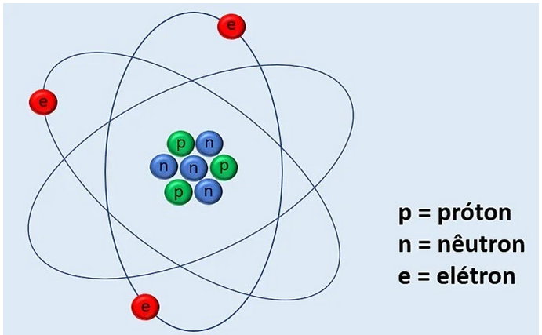

Conceitos Básicos
A eletricidade é a parte da física que estuda os fenômenos elétricos e suas aplicações e é subdivida em Eletrostática, Eletrodinâmica e Eletromagnetismo.
Eletrostática: Estuda os fenômenos elétricos no qual as cargas elétricas se encontram em repouso.
Eletrodinâmica: Estuda os fenômenos elétricos no qual as cargas elétricas se encontram em movimento. É na eletrodinâmica que nos deparamos com diversas variáveis que constantemente utilizamos em nosso cotidiano, tais como: corrente elétrica, tensão elétrica, potência elétrica, dentre outras.
Eletromagnetismo: Estuda a relação entre os fenômenos elétricos e magnéticos.
Para entendermos como os fenômenos elétricos ocorrem é necessário conhecer a estrutura atômica da matéria. O átomo basicamente é constituído de elétrons, prótons e nêutrons. Segundo o modelo atômico de Rutherford-Bohr o átomo é representado conforme a figura:

Segundo o modelo atômico apresentado o núcleo do átomo é composto pelos prótons e nêutrons e ao redor dele, na eletrosfera, ficam os elétrons. As únicas partículas dotadas de carga são os prótons e os elétrons, sendo que os últimos são aqueles que participam dos fenômenos elétricos, pois os prótons se encontram fortemente ligados ao núcleo.
A carga elétrica do elétron foi mensurada pelo físico norte-americano Robert Andrews Millikan. Os valores das cargas de um elétron e de um próton são representados da seguinte forma:
elétron (e-): - 1,6.10-19 C
próton (p+): + 1,6.10-19 C
Assim retirando as convenções de sinais podemos considerar que a carga elementar da matéria é igual a e = 1,6.10-19 C.
Na natureza um corpo pode se apresentar eletrizado negativamente, positivamente ou eletricamente neutro.
Corpo eletricamente neutro: Para que um corpo se apresente eletricamente neutro o número de elétrons e prótons deve ser o mesmo.
Corpo eletrizado negativamente: Um corpo fica eletrizado negativamente quando ganha elétrons em relação ao estado inicial eletricamente neutro, possuindo assim um número de elétrons maior que o número de prótons.
Corpo eletrizado positivamente: Um corpo fica eletrizado positivamente quando perde elétrons em relação ao estado inicial eletricamente neutro, possuindo assim um número de elétrons menor que o número de prótons.
Quantidade Total de Carga Elétrica de um Corpo (Q)
A quantidade de carga elétrica Q de um corpo corresponde ao produto entre a quantidade total de elétrons que esse corpo ganhou ou perdeu (n) e a carga elétrica elementar ( e = 1,6.10-19 C).
Q = n.e
• Quando o número de elétrons é igual ao número de prótons a carga elétrica é nula (Q = 0).
• Quando o número de elétrons é maior que o número de prótons (o corpo ganhou elétrons) a carga elétrica apresenta sinal negativo (Q < 0).
• Quando o número de elétrons é menor que o número de prótons (o corpo perdeu elétrons) a carga elétrica apresenta sinal positivo (Q > 0).
Observação: A quantidade de carga elética total de um corpo é uma grandeza quantizada, ou seja, ela só pode ter valores múltiplos inteiros da carga elementar
Princípio da Atração e Repulsão das Cargas
“Cargas de mesmo sinal se repelem, e cargas de sinais opostos se atraem.”
Vídeo Aula 1
Vídeo Aula 2
Exercícios de Fixação
01. Considere 3 esferas A,B e C, eletrizadas e suspensas por fios isolantes. Entre A e B ocorre repulsão: Entre B e C ocorre atração:
Pode-se afirmar que:
a) As esferas A e B estão eletrizadas com cargas elétricas de sinais contrários.
b) As esferas B e C estão eletrizadas com cargas elétricas de mesmo sinal.
c) Entre as esferas A e C ocorre atração.
d) Entre as esferas A e C ocorre repulsão.
e) Se a esfera A está positivamente eletrizada, então a esfera C apresenta falta de elétrons.
02. É dado um corpo eletrizado com carga de 6,4 μC.
a) Determine o número de elétrons em falta no corpo. A carga do elétron é – 1,6.10-19 C.
b) Quantos elétrons em excesso tem o corpo eletrizado com carga – 16 nC ?
03. Um corpo tem 3.1018 elétrons e 4.1018 prótons. Sendo a carga elementar 1,6.10-19 C , qual é a carga elétrica do corpo?
04. Um corpo tem 5.1019 elétrons e 3.1019 prótons. Sendo a carga elementar 1,6.10-19 C , qual é a carga elétrica do corpo?